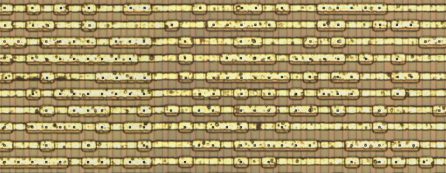

PCjs Machines
Home of the original IBM PC emulator for browsers.
Texas Instruments TI-57 ROMs
TI-57 ROMs come in several flavors, Production ROMs and Patent ROMs, which are discussed in detail below. There may also have been one or more TI-57 Production ROM Revisions, as discussed at the bottom of this document.
TI-57 ROM Format
Before we get into the various TI-57 ROM dumps, it’s worth saying a few words about the ROM format in general.
TI-57 ROMs contain 2048 13-bit words, individually addressible via 11 address lines (since 2^11 equals 2048).
Every word of the ROM is an instruction; in other words, it’s all “code” and no “data”. There are no instructions for loading values from ROM into registers. An interesting article titled “TI-57 Constant ROM” explains how the TI-57 deals with this limitation of the instruction set, by examining the TI-57’s techniques for generating various constants, such as Pi.
Another limitation of the instruction set is the way conditional branch instructions are decoded: only 10 of the
13 bits are available for specifying a branch address. So the 11th bit is taken from the high address bit of the
branch instruction itself. This effectively means that conditional branches can only branch within whichever half
of the ROM they are located. This is reinforced by Texas Instrument’s patent illustrations of the chip’s internal
architecture, where they depict the ROM in two blocks: ROM A (1024 x 13 BITS) and ROM B (1024 x 13 BITS).
TI programmers likely dealt with this limitation by simply writing the ROM code in two parts, ensuring that each part did not exceed 1024 words, and then combining the parts to produce the final ROM binary. This is why, in all ROM binaries, you’ll see a few words at the end of both the first and second halves that have not been used (ie, words filled with zeros).
And yes, while a zero (0x0000) is technically a valid instruction:
LOAD A,A+A,000F 0000 0000 0000
it does not appear to be an instruction that TI ever used. This is why I have disassembled zeros in my own listings as “UNUSED”.
TI-57 Production ROMs
For a long time, all we had were Patent ROM object code listings which, with one possible exception, suffered from numerous typos. Fortunately, thanks to efforts by Sean Riddle, who in turn relied on imaging work by John McMaster, a viable copy of an actual TI-57 production ROM was created, by carefully examining a photograph of the ROM array inside the chip. That is the ROM I ultimately used with the PCjs TI-57 Emulator.
The chip was labelled “TMC1501NC DI 7741”. Here’s what a section of its ROM array looks like:

Using the entire ROM Array Photo, and using the TI patents for comparison purposes, Sean created the following resources:
{kind=link}
- Raw ROM (from siliconpr0n photo)
- Original ROM (Big-endian) (bits in instruction order)
- Patent ROM (Big-endian) (transcribed from various TI patents)
Looking at that ROM array photo, I counted 215 columns and 128 rows, for a total of 27520 bits. Divide that by 13 and you get 2116 13-bit words – just enough room for 2K words.
The TI-57 patents describe the operation of the ROM to some extent:
Address lines A0-A6 address the X address decoder disclosed in U.S. Pat. No. 3,934,233
while address lines A7-A10 address the Y address decoder of U.S. Pat. No. 3,934,233.
Lines I12-10 provide, in parallel, the instruction word corresponding to the address
appearing on address lines A0-A10. The false logic instruction word is clocked out of
ROM 30 at S29.02 by gates 111 and inverted to true logic by inverters 110.
So 7 bits (A0-A6) form an “X address” and 4 bits (A7-A10) form a “Y address”. Looking more closely at the columns of the ROM Array photo, I noticed the following pattern:
1 empty column, 16 data columns, [1 empty column, 32 data columns] * 6
so even though there are 215 visible columns inside the ROM, 7 of them aren’t used for data, leaving 208 columns, which are divided into 13 16-bit groups. So it seems clear that A0-A6 lines select one of 128 rows, and that the other four address bits, A7-A10, select a column from each of those 13 16-bit groups.
Examination of the 3328-byte Raw ROM revealed that it was a straight-forward byte-by-byte transcription of the visible bits in the ROM Array Photo, left-to-right and top-to-bottom.
Since the Raw ROM dump is the starting point for creating any original ROM listing, I wanted to make absolutely sure it was accurate, so I decided to make my own “transcript” of the data in the photo. Then I wrote a script to convert that text file to a binary file:
node txt2raw.js ti57rawbits.txt myraw.bin
diff’ed the hexdumps of ti57raw.bin and myraw.bin, and found 4 bits that were incorrect:
59c59
< 00003a0 e2 22 4f ec 17 07 f3 08 4d ec ef 64 55 ef cd 69 (4d should be 49, ec should be ed)
---
> 00003a0 e2 22 4f ec 17 07 f3 08 49 ed ef 64 55 ef cd 69
135c135
< 0000860 18 3d a9 48 24 bf f0 35 57 45 4f 5b 09 b7 40 3a 83rd row, 13th 16-bit group (09 is wrong, 89 is correct)
---
> 0000860 18 3d a9 48 24 bf f0 35 57 45 4f 5b 89 b7 40 3a
163c163
< 0000a20 c0 e2 e0 dc 6f 69 1d 7a 24 fe 70 96 3c 2a 48 b8 100th row, 11th 16-bit group (e0 is wrong, e1 is correct)
---
> 0000a20 c0 e2 e1 dc 6f 69 1d 7a 24 fe 70 96 3c 2a 48 b8
Sean had already found the first two corrections himself, and after making the other corrections, he updated the Raw ROM dump on his website (see “updated 10/22/2017 - 4 bits fixed”); it has been updated here as well.
Turning our attention to the interpretation of the raw data, let’s review some additional information that Sean posted in a forum:
For future use, I uploaded my transcription of the siliconpr0n TI57 die shot:
www.seanriddle.com/ti57raw.bin
I also uploaded a jpeg of the ROM array rotated (CCW) to match the other dice, with
a square overlaid on each 1 bit from my transcription: www.seanriddle.com/ti57rombits.jpg.
I've checked it several times, but I wouldn't be surprised if there were a couple of
stray bits.
It looks like the physical layout is pretty simple; the 13 columns of 16 bits
per row are the 13 bits of each word (MSb on the left) for each page, and the
rows are in order. The only complication is that the page order is reversed every
bit: bit 12 has them in order 0-F, but bit 11 has them reversed F-0. I uploaded
this ordering as www.seanriddle.com/ti57.bin.
I compared it to the ROM dump in patent 4125901, and it is very similar;
Hrastprogrammer told me they were different, so that was expected, but I didn't
know how similar they would be. It turns out that most of the calls and branches
are 2-3 bytes different, but the other opcodes are generally the same.
I'll get a TI57 eventually and try to dump the ROM electronically to compare.
I picked up a TI55, which uses the same chip, and I'll dump it, too.
The reordered data that he saved as ti57.bin is what I call the Original ROM (Big-endian).
It is a 4096-byte file that pads each 13-bit word to a 16-bit word and stores them in big-endian format.
To make sure I understood the above interpretation of the raw data, and to produce a corresponding Original ROM (Little-endian), I wrote raw2le.js:
node raw2le.js ti57raw.bin ti57le.bin
I also verified that if the script was modified to output big-endian data, the result was identical
to the Original ROM (Big-endian). I then saved a dump of the
Original ROM (Little-endian), including all the corrections mentioned above, using
hexdump -x ti57le.bin, with the byte offsets changed to ROM addresses.
During the process of understanding the raw ROM data, it was also helpful to view the raw data file as binary, using this handy command:
(echo obase=2; hexdump -ve'/1 "%u\n"' ti57raw.bin)|bc|xargs printf %08i|fold -w16 | head
which displays the first 10 16-bit groups of raw ROM data:
1011011010110101
1111100100011011
1001101011110101
0000000000101001
0101111101001010
0110010100011110
0011011111011001
1000000000111010
0001010000110001
1000010100100101
TI-57 Patent ROMs
The Patent ROM (Big-endian) that Sean created, to help verify the correctness of his Original ROM (Big-endian), was generated from ROM object code listings in the following patents:
Note that TI-57 ROM listings were also provided in three other TI patents as well:
- 4,125,867 (see also: ROM From U.S. Pat. No. 4,125,867)
- 4,146,928
- 4,277,675 (not very readable)
Patent ROM
This is the ROM that Sean Riddle produced using listings from multiple TI patents. Since all the patent object code listings assume little-endian, I created Patent ROM (Little-endian) from Sean’s Patent ROM (Big-endian) and generated a dump for comparison purposes.
node be2le.js ti57patbe.bin ti57patle.bin
Hrast ROM #1
In the interests of completeness, I’ve archived another TI-57 ROM that I’ll call Hrast ROM #1, obtained from the PockEmul project on GitHub. I assume the ROM originally came from “HrastProgrammer’s” TI-57 emulator, based on an attribution in the PockEmul source code.
As I mentioned in my blog, HrastProgrammer indicated that he originally created a working ROM binary using object code dumps from multiple TI patents. However, the dump of Hrast ROM #1 appears to be very similar to the ROM From U.S. Pat. No. 4,125,867, so it’s likely that he relied primarily on that patent listing.
ROM From U.S. Pat. No. 4,125,901
Here’s the OCR’ed object code dump from 4,125,901, also for comparison purposes.
ROM From U.S. Pat. No. 4,164,037
Here’s the OCR’ed object code dump from 4,164,037, also for comparison purposes.
NOTE: The patent listing was actually missing data on one of the lines; comparing the listing to 4,125,901
made it fairly clear that a value in the middle of the row (0E07) was omitted. The listing in 4,146,928
is even worse, with four lines that are missing data.
ROM From U.S. Pat. No. 4,125,867
I was also interested in the object listing in U.S. Patent No. 4,125,867 that starts on page 54, because it may have been computer-generated rather than human-generated. It’s certainly unique among all the TI-57 patent listings, albeit a little hard to read.
To produce a dump, I started with the OCR’ed text of 4,125,901,
and then reviewed every entry, making corrections as needed. There were a few places where it was difficult to
distinguish between, say, 8 and B, and in those cases, my tendency was to leave the value from the listing
in patent 4,125,901 in place. The result is ti57pat867.bin, a 4096-byte 16-bit-word little-endian
binary file.
TI-57 Production ROM Revisions
Hrast ROM #2
The most recent version of HrastProgrammer’s Windows-based TI-57 emulator uses an electronic dump of a production TI-57 ROM. Unfortunately, HrastProgrammer has so far declined to share any information about this dump, including who provided it, what the TMS-1500 chip version was, what the contents of the ROM were, or how those contents differed from previous dumps.
Using a debugger and carefully stepping through the TI57E.EXE program, I discovered that all 2048 words of that ROM were stored as a series of 32-bit floating-point numbers. I’ve saved a dump of the floating-point data.
The next question: was this just another copy of what I called the Original ROM (Little-endian), and if not, did it precede that ROM or was it a revision?
Revised ROM
I wrote a script to convert the 32-bit floating-point values from Hrast ROM #2 to 16-bit words, and then diff’ed the results with the Original ROM (Little-endian) from the “TMC1501NC DI 7741” chip:
64c64
< 00003f0 0cbe 1e00 07cf 1528 0e07 0e07 1dfc 075f
---
> 00003f0 0cbe 1e00 07cf 1528 0eff 0e0d 1dfc 075f
118,119c118,119
< 0000750 0c11 1476 0c7a 1bae 1485 1baf 15c6 1476
< 0000760 0c7a 1bb3 15c6 1465 0d30 1b8b 1122 0ce4
---
> 0000750 0e11 1476 0c7a 1bae 1485 1baf 15c6 1476
> 0000760 0c7a 1bb3 15c6 13fc 0d30 1b8b 1122 0ce4
128c128
< 00007f0 145d 0e04 070f 0e03 0000 0000 0000 0000
---
> 00007f0 145d 0e04 070f 0e03 0c11 08df 0e03 0000
149,150c149,150
< 0000940 0cb6 1cc4 03cf 0e07 0e07 1ca3 1523 0e07
< 0000950 0e07 18a6 0a3f 0c3a 18ae 0c35 152c 1474
---
> 0000940 0cb6 1cc4 03cf 0eff 0e0d 1ca3 1523 0eff
> 0000950 0e0b 18a6 0a3f 0c3a 18ae 0c35 152c 1474
154c154
< 0000990 0cb6 1cdd 0e07 0e07 18dd 0a3f 0c36 0c3a
---
> 0000990 0cb6 1cdd 0eff 0e0d 18dd 0a3f 0c36 0c3a
167c167
< 0000a60 0e07 0e03 0e08 15a1 0e41 145d 0749 0c54
---
> 0000a60 0e0d 0e03 0e08 15a1 0e41 145d 0749 0c54
213c213
< 0000d40 0c96 1aa3 0c10 0767 0597 007f 05ad 026d
---
> 0000d40 0c96 1aa3 0c10 0767 0197 007f 05ad 026d
Like Hrast ROM #1, this ROM was patched in several places with custom opcodes that only the HrastProgrammer emulator uses; specifically:
- 0E0B:
POWOFF - 0E0D:
?KEY - 0EFF:
NOP
After replacing all three of those opcodes with their original value (presumably 0E07), that left the following differences:
118,119c118,119
< 0000750 0c11 1476 0c7a 1bae 1485 1baf 15c6 1476
< 0000760 0c7a 1bb3 15c6 1465 0d30 1b8b 1122 0ce4
---
> 0000750 0e11 1476 0c7a 1bae 1485 1baf 15c6 1476
> 0000760 0c7a 1bb3 15c6 13fc 0d30 1b8b 1122 0ce4
128c128
< 00007f0 145d 0e04 070f 0e03 0000 0000 0000 0000
---
> 00007f0 145d 0e04 070f 0e03 0c11 08df 0e03 0000
213c213
< 0000d40 0c96 1aa3 0c10 0767 0597 007f 05ad 026d
---
> 0000d40 0c96 1aa3 0c10 0767 0197 007f 05ad 026d
Looking at these differences as instructions:
937c937
< 0x03a8: 0x0c11 CLR A[13:0]
---
> 0x03a8: 0x0e11 STORE RAB,1
948c948
< 0x03b3: 0x1465 CALL 0x0465
---
> 0x03b3: 0x13fc CALL 0x03fc
1021,1023c1021,1023
< 0x03fc: 0x0000 UNUSED
< 0x03fd: 0x0000 UNUSED
< 0x03fe: 0x0000 UNUSED
---
> 0x03fc: 0x0c11 CLR A[13:0]
> 0x03fd: 0x08df MOVE D,D,0F00 0000 0000 0000
> 0x03fe: 0x0e03 RET
1701c1701
< 0x06a4: 0x0597 MOVE C,C,0000 0000 0000 00FF
---
> 0x06a4: 0x0197 MOVE C,C,FFFF FFFF FFFF FFFF
they appear to have all the hallmarks of a patch. For example, this instruction:
0x03b3: 0x1465 CALL 0x0465
which originally called a 2-instruction subroutine that did nothing more than this:
0x0465: 0x08df MOVE D,D,0F00 0000 0000 0000
0x0466: 0x0e03 RET
was replaced with CALL 0x03fc, which calls a new 3-instruction subroutine placed in the last 4
unused words of the first half of the ROM, and which performs one additional CLR instruction:
0x03fc: 0x0c11 CLR A[13:0]
0x03fd: 0x08df MOVE D,D,0F00 0000 0000 0000
0x03fe: 0x0e03 RET
It’s possible that these remaining revisions were also made by HrastProgrammer, but for now, I’m going to assume they represent a minor subsequent revision made by Texas Instruments to the Original ROM (Little-endian).
This ROM has been saved as Revised ROM (Little-endian), along with a dump.
TI-57 ROM Used With PCjs
The ROM that the PCjs TI-57 Emulator uses is the Original ROM (Little-endian), which is the fully-corrected transcribed ROM taken from the contents of chip “TMC1501NC DI 7741”.
Using the PCjs TI-57 Emulator’s built-in disassembler, here’s a listing of that ROM.